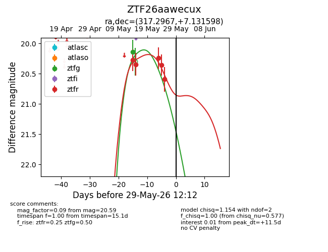
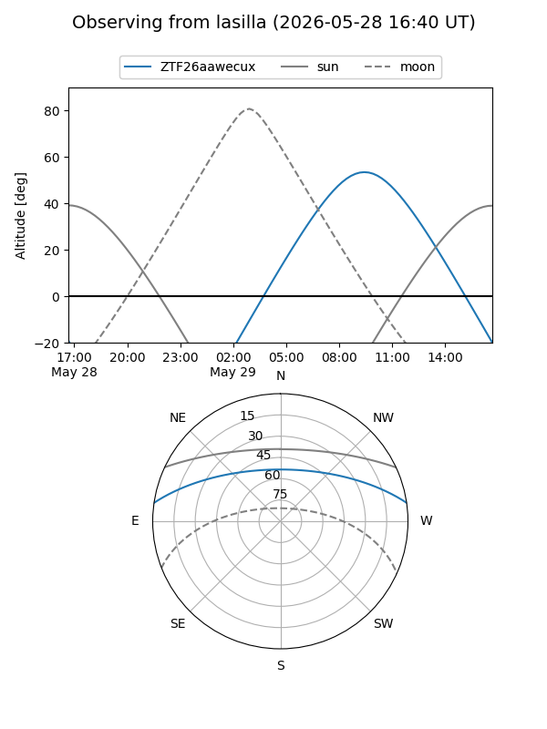
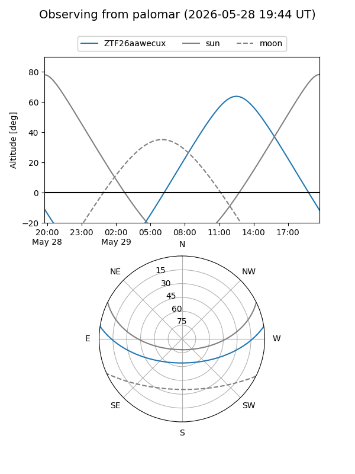
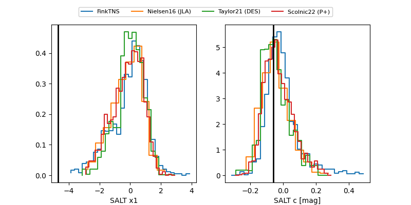

ZTF26aawecux
Target ZTF26aawecux at 2026-05-29 12:16
Aliases and brokers:
lsst-FINK: link
lsst-Lasair: link
lsst-ALeRCE: link
ztf-FINK: link
ztf-Lasair: link
ztf-ALeRCE: link
alt names
ZTF26aawecux (ztf,fink_ztf)
Coordinates:
equatorial (ra, dec) = 317.2967,+7.13160
equatorial (HMS+DMS) = 21:09:11.21,+07:07:53.75
galactic (l, b) = (57.0485,-26.28186)
Flags:
Photometry:
last ztfg=20.14, ztfr=20.59
1 ztfg, 5 ztfr detections
Lightcurve

Visibility


Additional plots
